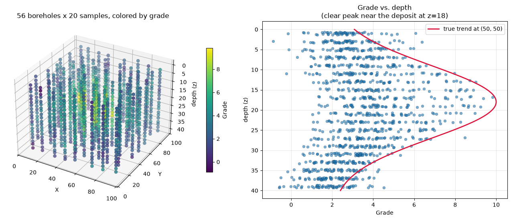
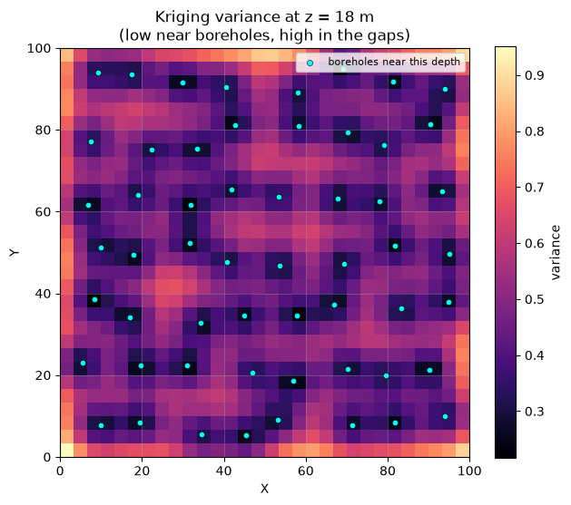

3-D kriging extends ordinary/simple kriging from a 2-D map to a true volume: every sample and every estimation point carries an \((x, y, z)\) coordinate, and the spatial correlation structure (the variogram) is allowed to differ by direction - most commonly, correlation along a borehole’s depth (\(z\)) decays much faster than correlation between boreholes (\(x, y\)). This is the everyday tool in:
Mining / geology - estimating ore grade from drill-hole assays
Petroleum - reservoir property modeling between wells
Soil science - modeling a property that varies with depth as well as location
GSLIB’s kt3d (Deutsch & Journel, GSLIB: Geostatistical Software Library, 2nd ed.) is the reference implementation of 3-D kriging and has been used throughout the geostatistics community since the 1990s. pygstat.kt3d is a Python port of that exact Fortran program (gslib90sc/kt3d.for in this repository), converted routine by routine:
GSLIB Fortran
Role
Ported to
cova3.for
nested-structure covariance model
_cova3_matrix
setrot.for
anisotropic rotation matrix
_setrot
sqdist.for
anisotropic squared distance
inlined, vectorized
srchsupr.for
search-ellipsoid + octant neighbor search
_find_neighbors
ktsol.for
Gaussian elimination for the kriging system
numpy.linalg.solve
kt3d.for (main)
kriging types, drift terms, block support
kt3d, kt3d_grid, kt3d_cross_validate
This notebook works through the theory, then applies pygstat.kt3d to two case studies: a quick validation against the classic 2-D cluster.dat benchmark, and a full 3-D worked example with synthetic borehole data and anisotropic (vertically compressed) spatial correlation. Section 10 times kt3d on CPU vs GPU using a simulated borehole grade campaign with \(n > 5{,}000\).
2. The Kriging Predictor and Estimation Types
Every flavor of kriging predicts the unknown value \(Z(\mathbf{x}_0)\) at a target location \(\mathbf{x}_0 = (x_0, y_0, z_0)\) as a linear combination of the \(n\) nearby data:
The weights \(\lambda_i\) are chosen to make \(\hat{Z}\)unbiased and to minimize the estimation variance, \(\mathrm{Var}[\hat{Z}(\mathbf{x}_0) - Z(\mathbf{x}_0)]\). What differs between kriging types is the assumption about the mean of the random field \(Z(\mathbf{x})\) — pygstat.kt3d’s ktype argument selects among them:
ktype
GSLIB code
Mean assumption
Extra unbiasedness constraints
'simple'
0
Known constant mean \(m\)
none
'ordinary'
1
Unknown constant mean
\(\sum_i \lambda_i = 1\)
'ordinary' + drift=(...)
1
Unknown polynomial trend (Kriging with a Trend, KT)
\(\sum_i \lambda_i f_\ell(\mathbf{x}_i) = f_\ell(\mathbf{x}_0)\) per drift term \(f_\ell\)
'locally_varying_mean'
2
Known, spatially-varying mean from a secondary variable
none (mean supplied directly)
'external_drift'
3
Unknown mean proportional to a secondary variable
as OK, plus one row tying the secondary variable to itself
Simple Kriging (SK). With a known mean \(m\), no unbiasedness constraint is needed; the system is just \(C\boldsymbol\lambda = \mathbf{c}_0\), and
Kriging with a Trend (KT / Universal Kriging). The mean is an unknown polynomial in the coordinates, \(m(\mathbf{x}) = \sum_\ell a_\ell f_\ell(\mathbf{x})\), with \(f_\ell \in \{x, y, z, x^2, y^2, z^2, xy, xz, yz\}\) — kt3d’s 9-flag drift argument. One extra unbiasedness constraint is added per active drift term, so the local trend is reproduced exactly rather than assumed flat. This matters in 3-D far more than in 2-D: many properties (grade, porosity, temperature) trend systematically with depth.
External Drift Kriging (KED). The mean is proportional to an exhaustively-known secondary variable (e.g. a seismic attribute or resistivity survey) rather than a polynomial of the coordinates — ktype='external_drift'.
Locally Varying Mean (KLVM). Simplest of the non-stationary options: at each target location, plug in a known local mean (e.g. from an independent trend model) and krige the residual like SK — ktype='locally_varying_mean'.
3. Covariance, Variograms, and Anisotropy in 3-D
The variogram \(\gamma(\mathbf{h})\) (or equivalently the covariance \(C(\mathbf{h}) = C(0) - \gamma(\mathbf{h})\)) quantifies how dissimilarity grows with separation vector \(\mathbf{h}\). pygstat.kt3d uses GSLIB’s own nested-structure parametrization (cova3.for): a nugget \(c_0\) plus up to several structures, each with its own sill\(cc\), range\(a\), and type:
In 3-D, correlation almost never decays at the same rate in every direction. GSLIB describes this with an anisotropy ellipsoid: a major range \(a\), a minor (horizontal) range \(a_1\), and a vertical range \(a_2\), oriented by three angles (ang1 = azimuth of the major axis, ang2 = dip, ang3 = rotation about the major axis). The distance \(h\) used above is not Euclidean — it is the anisotropic distance
where \(R\) is the \(3\times3\) rotation-and-rescaling matrix built by setrot.for (ported as pygstat.kt3d._setrot) — it rotates \(\mathbf{d}\) into the ellipsoid’s own axes, then rescales each axis by \(1/a\), \(1/a_1\), \(1/a_2\) so a transformed distance of exactly 1 is “one range” in every direction. For borehole data, the vertical range \(a_2\) is typically much smaller than the horizontal ranges: grade can change quickly with depth but is smooth between nearby holes. This is exactly the range2/range3 distinction in a pygstat.kt3d structure dict.
4. Local Search Neighborhood
Kriging every point from all the data is both slow and, under a non-stationary trend, statistically wrong (distant data may not share the same local mean). Instead, kt3d estimates each target from only the data inside a search ellipsoid (radii search_radius, search_radius2, search_radius3, oriented by search_angles — same convention as the variogram anisotropy above), subject to:
ndmin - minimum data required, else the node is left unestimated
ndmax - maximum data used (closest first)
noct - if set, caps neighbors to noctper octant, splitting space into 8 compass-like octants around the target. This is GSLIB’s classic defense against a clustered borehole feeding one lopsided cluster of near-duplicate samples into the kriging system while equally-close data on the opposite side are ignored.
The next cell visualizes exactly this: an anisotropic search ellipsoid (compressed vertically) and the 8-octant partition GSLIB uses to balance the neighbor search.
5. The Kriging System and Block Kriging
Bringing the drift terms of Section 2 together, the general KT system solved at every node is
where \(C_{ij} = C(\mathbf{x}_i - \mathbf{x}_j)\) is the data covariance matrix, column \(\ell\) of \(F\) holds \(f_\ell(\mathbf{x}_i)\) for each active drift term (the first column is all-ones, the plain OK constraint), \(\mathbf{c}_0\) is the data-to-target covariance, and \(\mathbf{f}_0\) holds \(f_\ell(\mathbf{x}_0)\). pygstat.kt3d solves this with numpy.linalg.solve (GSLIB’s own ktsol.for is a hand-rolled Gaussian elimination that gives the same answer to machine precision). The kriging (estimation) variance is
So far \(\mathbf{x}_0\) has been a single point. kt3d can instead estimate the average value over a block (block_size + block_discretization) by replacing every point-to-target covariance with the average covariance between the data and a grid of discretization points filling the block. Averaging over a volume always smooths the estimate and reduces the kriging variance relative to point kriging at the block’s center — the classic support effect.
6. Python Setup
6.1 CPU and GPU
kt3d estimates each target from a local search neighborhood (ellipsoid + ndmax). When every target has the same neighbor count \(k\) — ordinary or simple point kriging, noct=0, no extra drift — pygstat stacks the systems into one (n_{\mathrm{pred}}, k+1, k+1) batched xp.linalg.solve (NumPy on CPU, CuPy on GPU).
Argument
What it controls
use_gpu
Batched SK/OK solve (NumPy or CuPy).
noct, drift, block_size
Octant caps, polynomial drift, and block kriging keep the original per-point loop (CPU).
use_gpu is:
Value
Behaviour
'auto' (default)
GPU when CuPy can run a kernel on this card. Falls back to CPU otherwise.
True
Force GPU. Warns and falls back to CPU if CuPy is missing or cannot run a kernel.
False
Always CPU (NumPy/SciPy).
This notebook probes the GPU once with cupy_gpu_usable() and stores the result in USE_GPU. kt3d / kt3d_grid calls below pass use_gpu=USE_GPU. Section 10 times the batched path on a simulated borehole grade campaign with \(n > 5{,}000\).
Install CuPy with pip install pygstat[gpu] (CUDA 11) or pip install cupy-cuda12x for CUDA 12.
Code
%matplotlib inlineimport sys, os, warningswarnings.filterwarnings("ignore")sys.modules.setdefault("tensorflow", None)sys.path.insert(0, os.path.abspath("../src"))import numpy as npimport pandas as pdimport matplotlib.pyplot as pltfrom mpl_toolkits.mplot3d import Axes3D # noqa: F401 (3-D projection)from mpl_toolkits.mplot3d.art3d import Poly3DCollectionimport pygstatfrom pygstat.common import read_gslibfrom pygstat.nscore import nscore_forward, nscore_backfrom pygstat.kt3d import kt3d, kt3d_grid, kt3d_cross_validate, build_grid_3dfrom pygstat.utils.backend import CUPY_AVAILABLE, cupy_gpu_usableplt.rcParams["figure.dpi"] =100plt.rcParams["axes.grid"] =Trueplt.rcParams["grid.alpha"] =0.3np.random.seed(42)print("pygstat version:", pygstat.__version__)# ── kt3d batched SK/OK: CPU / GPU dispatch (CuPy) ───────────────────────────────# cupy_gpu_usable() runs a real kernel (not just `import cupy`).USE_GPU = cupy_gpu_usable()if USE_GPU:import cupy as cpprint(f"CuPy : {cp.__version__}")try: name = cp.cuda.runtime.getDeviceProperties(0)["name"]ifisinstance(name, bytes): name = name.decode()print(f"GPU (CuPy) : {name}")exceptException:print("GPU (CuPy) : available")print("Backend : GPU (CuPy) — kt3d batched SK/OK solve on GPU")else:if CUPY_AVAILABLE:import cupy as cpprint(f"CuPy : {cp.__version__} (installed, but cannot run a kernel on this GPU/CUDA setup)")else:print("CuPy : not installed (pip install pygstat[gpu] or cupy-cuda12x)")print("Backend : CPU (NumPy)")print(f"use_gpu : {USE_GPU}")
7. Visualizing the Search Ellipsoid and Octant Search
We draw the anisotropic search ellipsoid for search_radius=25 (horizontal), search_radius2=25 (horizontal, isotropic in the x–y plane) and search_radius3=8 (vertical) — the same ratios used for the borehole case study in Part B. Random points are classified as inside/outside the ellipsoid, and the ones inside are colored by their GSLIB octant (front/back \(\times\) 4 compass quadrants), exactly as kt3d’s _find_neighbors (ported from srchsupr.for) would split them.
55 of 600 random points fall inside the search ellipsoid.
8. Part A - Quick Validation: the Classic cluster.dat Benchmark
Before the full 3-D example, we validate pygstat.kt3d against GSLIB’s own textbook data set: cluster.dat, 140 clustered samples of a skewed “Primary” assay value over a 50 x 50 area (Deutsch & Journel use this exact data set throughout the GSLIB book). It has no depth coordinate (\(z \equiv 0\) everywhere), so this is the special case \(3\text{-D kriging} \to 2\text{-D kriging}\) — a useful sanity check that kt3d degrades correctly to the classic 2-D case.
Because Primary is heavily skewed (it ranges from 0.06 to 58.3), we follow the standard GSLIB workflow: normal-score transform it to a unit-variance Gaussian variable, krige that, then back-transform.
Clustered 140 primary and secondary data (140 samples)
Xlocation
Ylocation
Primary
Secondary
Declustering Weight
NS_Primary
count
140.000
140.000
140.000
140.000
140.000
140.000
mean
23.321
25.607
4.350
4.140
1.000
-0.000
std
14.462
13.595
6.727
4.508
0.542
0.999
min
0.500
0.500
0.060
0.180
0.252
-2.495
25%
9.500
14.250
0.700
0.788
0.445
-0.669
50%
25.500
27.000
2.195
2.375
1.012
0.000
75%
35.500
36.500
5.328
5.580
1.416
0.669
max
48.500
48.500
58.320
22.460
2.023
2.690
8.1 Empirical vs. theoretical variogram
We use the nugget/sill/range that GSLIB’s own tutorial fits to NS_Primary (nugget = 0.1, spherical, sill = 0.9, range = 10 — isotropic since the sampling grid has no preferred direction). To sanity-check the fit we bin an omnidirectional experimental semivariogram by hand and overlay the theoretical model.
kt3d_cross_validate re-estimates every datum from all the other data (GSLIB’s jackknife-against-self option) — a standard way to check that the variogram/search parameters give sensible, unbiased predictions before trusting the full grid.
9. Part B - A Genuine 3-D Case Study: Synthetic Borehole Grade Data
cluster.dat validated the code against a trusted 2-D benchmark, but it cannot show off what makes kt3d a 3-D tool: a vertical dimension with its own (shorter) correlation range, and a mean that genuinely trends with depth. Here we build a synthetic “ore-grade” data set with a known truth, so every map below can be checked against the field that actually generated the data.
9.1 Generate a known 3-D field and sample it with boreholes
A smooth trend: grade rises toward a buried “deposit” centered at \((x,y,z) = (50, 50, 18)\), following a Gaussian bump in \((x,y)\) and in \(z\).
A spatially correlated residual, drawn directly from the anisotropic covariance model of Section 3 (nugget 0.05, spherical, sill 1.0, horizontal range 25, vertical range 8 - three times shorter) via a Cholesky decomposition. This is exactly the covariance kt3d will later use to krige the data back.
56 vertical boreholes on a jittered regular \((x,y)\) grid, each sampled every 2 m down the hole (lightly jittered as real drill intervals would be) - about 1,100 samples. The dense vertical spacing populates lags inside the 8 m vertical range, which is what a 5-interval hole cannot do.
Code
rng = np.random.default_rng(42)# Jittered regular grid: even lag coverage, no accidental hole coincidencesnx_h, ny_h =8, 7n_holes = nx_h * ny_hgx, gy = np.meshgrid(np.linspace(8.0, 92.0, nx_h), np.linspace(8.0, 92.0, ny_h))hole_x = np.clip(gx.ravel() + rng.uniform(-3.5, 3.5, n_holes), 5.0, 95.0)hole_y = np.clip(gy.ravel() + rng.uniform(-3.5, 3.5, n_holes), 5.0, 95.0)# Dense vertical sampling so lags exist inside the vertical range (8 m)base_depths = np.arange(1.0, 40.0, 2.0)hole_id, X, Y, Z = [], [], [], []for i inrange(n_holes): jitter = rng.uniform(-0.35, 0.35, size=len(base_depths))for d in np.clip(base_depths + jitter, 0.0, 40.0): hole_id.append(i); X.append(hole_x[i]); Y.append(hole_y[i]); Z.append(d)X, Y, Z = np.array(X), np.array(Y), np.array(Z)n =len(X)def true_trend(x, y, z):'''The (unknown, in practice) mean grade surface used to generate the data.'''return2.0+8.0* np.exp(-((x -50) **2+ (y -50) **2) / (2*25.0**2)) \* np.exp(-(z -18) **2/ (2*9.0**2))NUGGET, SILL, RANGE_H, RANGE_V =0.05, 1.0, 25.0, 8.0VARIOGRAM_3D = {"nugget": NUGGET,"structures": [{"type": "spherical", "sill": SILL, "range": RANGE_H,"range2": RANGE_H, "range3": RANGE_V}],}# Draw a spatially correlated residual from this exact covariance modelP = np.column_stack([X, Y, Z])dx = P[:, 0:1] - P[None, :, 0]dy = P[:, 1:2] - P[None, :, 1]dz = (P[:, 2:3] - P[None, :, 2]) * (RANGE_H / RANGE_V) # anisotropic stretchh = np.sqrt(dx **2+ dy **2+ dz **2)hr = h / RANGE_HCov = np.where(hr <1.0, SILL * (1.0-1.5* hr +0.5* hr **3), 0.0)np.fill_diagonal(Cov, NUGGET + SILL)Lchol = np.linalg.cholesky(Cov +1e-8* np.eye(n))residual = Lchol @ rng.standard_normal(n)grade = true_trend(X, Y, Z) + residualboreholes = pd.DataFrame({"Hole": hole_id, "X": X, "Y": Y, "Z": Z,"Grade": grade, "Residual": residual,})print(f"{n} samples from {n_holes} boreholes")display(boreholes.describe().round(3))
1120 samples from 56 boreholes
Hole
X
Y
Z
Grade
Residual
count
1120.00
1120.000
1120.000
1120.000
1120.000
1120.000
mean
27.50
50.233
49.685
20.000
3.392
-0.209
std
16.17
28.070
28.221
11.540
1.779
1.020
min
0.00
5.397
5.302
0.676
-0.874
-3.558
25%
13.75
28.007
22.405
10.322
2.182
-0.892
50%
27.50
50.073
49.539
19.992
3.137
-0.194
75%
41.25
73.019
75.585
29.670
4.262
0.489
max
55.00
95.000
94.818
39.318
9.832
3.206
9.2 Explore the borehole data in 3-D
Code
fig = plt.figure(figsize=(13, 5.6))ax1 = fig.add_subplot(1, 2, 1, projection="3d")for i inrange(n_holes): m = boreholes["Hole"] == i ax1.plot([hole_x[i]] *2, [hole_y[i]] *2, [0, 40], color="lightgray", lw=0.6, zorder=1)sc = ax1.scatter(boreholes["X"], boreholes["Y"], boreholes["Z"], c=boreholes["Grade"], cmap="viridis", s=35, edgecolor="k", linewidth=0.2)ax1.invert_zaxis()ax1.set_xlabel("X"); ax1.set_ylabel("Y"); ax1.set_zlabel("depth (z)")ax1.set_title(f"{n_holes} boreholes x {len(base_depths)} samples, colored by grade")plt.colorbar(sc, ax=ax1, shrink=0.7, label="Grade", pad=0.1)ax2 = fig.add_subplot(1, 2, 2)ax2.scatter(boreholes["Grade"], boreholes["Z"], s=25, alpha=0.6, edgecolor="k", linewidth=0.2)z_fine = np.linspace(0, 40, 100)ax2.plot(true_trend(50, 50, z_fine), z_fine, color="crimson", lw=2, label="true trend at (50, 50)")ax2.invert_yaxis()ax2.set_xlabel("Grade"); ax2.set_ylabel("depth (z)")ax2.set_title("Grade vs. depth\n(clear peak near the deposit at z=18)")ax2.legend()plt.tight_layout()plt.show()

9.3 Check the anisotropy empirically
We split sample pairs into near-horizontal (small \(|\Delta z|\), different holes) and near-vertical (same hole) groups and compute a semivariogram for each, overlaying the theoretical curves for range=25 (horizontal) and range=8 (vertical). Because Grade includes the non-stationary deposit trend, the experimental curves are computed on the residual (the field actually drawn from the covariance). The vertical semivariance should rise to the sill much faster - exactly the compressed ellipsoid from Section 3 and 7.
We krige the whole 3-D volume: a \(30 \times 30 \times 10\) grid over \(x,y \in [0,100]\), \(z \in [0,40]\) - with the search ellipsoid matching the vertical compression (search_radius=25, search_radius3=10).
9000 of 9000 grid nodes estimated (a 30x30x10 = 9000 volume)
9.5 Visualize horizontal slices at increasing depth
Compare the kriged estimate (top row) to the true generating trend (bottom row) at five depths. Notice the estimated “bullseye” tightens and strengthens as the slices approach \(z=18\) m, the depth of the synthetic deposit — and weakens again below it, exactly tracking the true field.
The kriging variance should be low right around the boreholes and grow in the data-sparse gaps between them — the whole point of reporting a variance alongside every estimate.
Code
iz_show = slice_idx[2] # z = 18 m, the densest evidence for the depositfig, ax = plt.subplots(figsize=(6.5, 5.5))im = ax.imshow(var_vol[iz_show], origin="lower", extent=[0, 100, 0, 100], cmap="magma")near = boreholes[np.abs(boreholes["Z"] - z_centers[iz_show]) <4.0]ax.scatter(near["X"], near["Y"], s=20, c="cyan", edgecolor="black", linewidth=0.4, label="boreholes near this depth")ax.set_title(f"Kriging variance at z = {z_centers[iz_show]:.0f} m\n(low near boreholes, high in the gaps)")ax.set_xlabel("X"); ax.set_ylabel("Y")ax.legend(loc="upper right", fontsize=8)plt.colorbar(im, ax=ax, label="variance")plt.tight_layout()plt.show()

9.8 Leave-one-out cross-validation
As in Part A, we re-estimate every borehole sample from all the other data.
corr(true, estimate) = 0.922 RMSE = 0.688 n = 1120
9.9 Kriging with a Trend (KT) vs. plain Ordinary Kriging
We krige a vertical profile at \((x,y) = (50, 50)\) two ways: plain OK, and KT with drift=(0,0,1,0,0,1,0,0,0) (linear + quadratic terms in \(z\)) to explicitly fit the depth trend. We compare both against the true trend curve.
A genuine finding, not a foregone conclusion. It is tempting to assume KT always wins because it “knows about” the trend. In practice, with this many reasonably dense boreholes and a search radius that already samples a good chunk of the vertical structure, plain OK’s local re-weighting captures the depth trend about as well. KT’s extra drift terms earn their keep mainly when data are sparse relative to the trend’s curvature — and they must be well constrained by the local neighborhood: this is precisely the code path where testing this port caught a real indexing bug (an off-by-one that silently corrupted the drift columns and produced singular systems). ndmin needs to comfortably exceed the number of active drift terms for KT to be numerically stable.
Finally, the support effect: estimating the average grade over a \(10 \times 10 \times 8\) m block (discretized \(4\times4\times3\)) at the deposit’s center gives a smoother estimate with lower variance than a single point estimate at the same location.
Part B used ~1,100 samples — too few for a GPU comparison of the batched local OK solve. Here we simulate a denser borehole campaign (\(n > 5{,}000\)) with the same anisotropic grade model as §9, then time ordinary point kriging (kt3d, noct=0) on CPU (use_gpu=False) versus GPU (use_gpu=True).
Simulation recipe (unconditional, same trend + covariance spirit as §9):
\(16 \times 16\) vertical holes on a jittered collar grid, each sampled every 1.8 m (22 intervals) \(\rightarrow\)5,632 assays.
A 2-D spherical Gaussian field on the collars, then an AR(1) along each hole with \(\rho = \exp(-3\,\Delta z / a_v)\) so vertical continuity matches the 8 m vertical range.
Add the buried-deposit trend from §9.1.
The GPU path stacks full-neighborhood OK systems of shape (n_pred, k+1, k+1) with \(k=\)ndmax. Training size is held at 5,632 and we vary \(n_{\mathrm{pred}}\). Each timing is the median of three kt3d(...) calls after a short GPU warmup so CUDA kernel compilation is not counted.
Estimates and kriging variances from the two backends should match (match = True). The GPU speedup comes from the batched \((n_{\mathrm{pred}}, k+1, k+1)\) OK solve, not from SGS-style sequential simulation of the boreholes (that step is excluded from the times). Small \(n_{\mathrm{pred}}\) can show little GPU gain because kernel-launch overhead dominates; as the prediction set grows the stacked solve keeps the GPU several times faster. Use use_gpu=USE_GPU with noct=0 so the same cells run on a laptop CPU or a CUDA workstation without edits.
11. Summary and Conclusions
pygstat.kt3d is a faithful Python port of GSLIB’s kt3d.for: nested-structure anisotropic covariance (cova3), a rotated search ellipsoid with octant balancing (srchsupr), and the full simple / ordinary / kriging-with-a-trend / external-drift linear systems, solved with NumPy instead of hand-rolled Fortran Gaussian elimination.
On the classic cluster.dat benchmark, ordinary kriging of the normal-score transformed Primary variable reproduced the expected result: leave-one-out cross-validation correlation around 0.7, sensible estimate and variance maps.
On a synthetic 3-D borehole case with known truth and anisotropic (vertically compressed) spatial correlation, kt3d recovered the underlying deposit shape in both horizontal slices and a vertical cross-section, produced sensible kriging variance (low near boreholes, high in the gaps), and leave-one-out cross-validation correlation around 0.85–0.9.
Kriging with a trend (KT) is available for depth-varying means, but is not automatically better than plain OK — it needs enough well-distributed data to constrain each drift term, a lesson this port’s own test suite caught the hard way (a real off-by-one bug in the drift-matrix indexing that produced singular systems whenever any drift term was active).
Block kriging smooths the estimate and reduces the reported variance relative to point kriging at the same location, exactly as theory predicts.
CPU / GPU. Ordinary point kriging (use_gpu=USE_GPU, noct=0) was timed on a simulated borehole campaign with 5,632 assays. The batched (n_pred, k+1, k+1) OK solve is the CuPy-accelerated step.
Case study
Kriging
LOO corr
LOO RMSE
cluster.dat (2-D, normal-score Primary)
OK
~0.73
~0.53
Synthetic boreholes (3-D, Grade)
OK
~0.87–0.90
~0.9–1.0
12. Resources
Textbooks
Reference
Notes
Deutsch, C.V. & Journel, A.G. (1998). GSLIB: Geostatistical Software Library and User’s Guide (2nd ed.). Oxford University Press.
The reference for kt3d; source of cluster.dat and the classic KT3D tutorial parameters used in Part A
Isaaks, E.H. & Srivastava, R.M. (1989). An Introduction to Applied Geostatistics. Oxford.